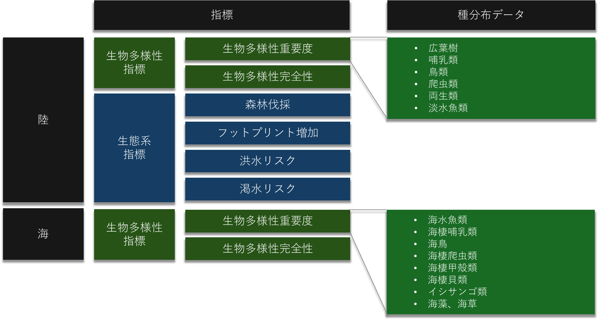

概念的イノベーション - 重要性と完全性に基づく望ましいアクションの特定
シンク・ネイチャーのイノベーション②
概念的イノベーション
二軸の評価
企業活動と自然との接点を評価するうえで、i. ある活動がどれだけ生物多様性の保全上重要な地域で行われているか、と ii. その活動自体がどれだけの生物多様性損失をもたらすか、の二つを観点を統合することが必要でした。
この後者はさらに、ii-a. 事業を行う拠点の周囲ですでに起きている生物多様性の損失と、ii-b. 事業による損失、に分解できます。 個社のインパクトを考える場合には、これらを分けて考える必要があります (Figure 1)。
これは、拠点の周囲の生物多様性の重要度、および完全性（すでに起きている生物多様性の損失の度合い）を もとに、個社の企業活動が行われている文脈を明らかにするという作業です。
Figure 1: 重要性-完全性の2軸評価による拠点の文脈化
この二軸の評価は、GBNATが提供するレポートにおいても採用されています。 複数の拠点に対して、望ましいアクションを特定することができます。
生態系指標を用いた深堀り
GBNATでは、生物多様性の重要度と完全性という指標のほかにも、 生態系の状態を表す指標を提供しています (Figure 2)。 過去20年の森林伐採は、事業拠点周辺の経済活動が森林伐採に由来するものであるリスクのリファレンスとなります。これらは熱帯の農業コモディティにおいて大きな評判リスクになりえます。また、人間活動拡大の割合も類似した見方をすることができます。水リスクについては、多くの産業が関連すると考えられ、例えば水質が悪い場合には工場の操業リスクや排水に起因する評判リスク、洪水や渇水については水資源の不足や、工場に対する物理的なリスクの目安となります。また、これらの生態系メトリックを、先述の２軸展開と併せて用いることで、生態系の変化がもたらす影響の大小を見積もることができ、アクションの優先順位付けにつながります。
Figure 2: GBNATで提供されるデータレイヤー
